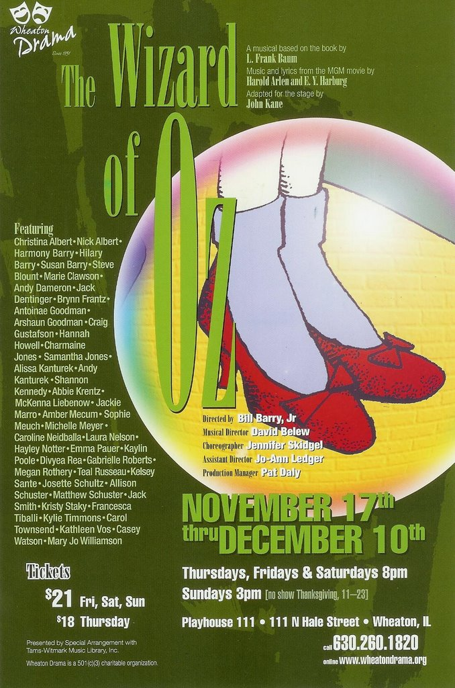
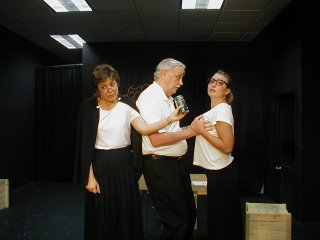
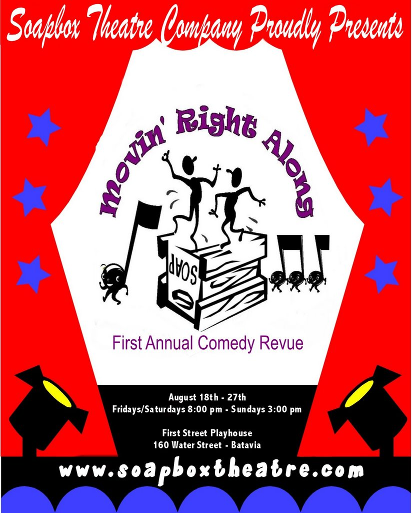
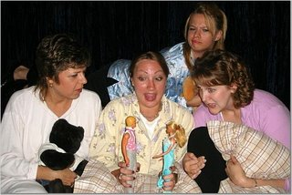
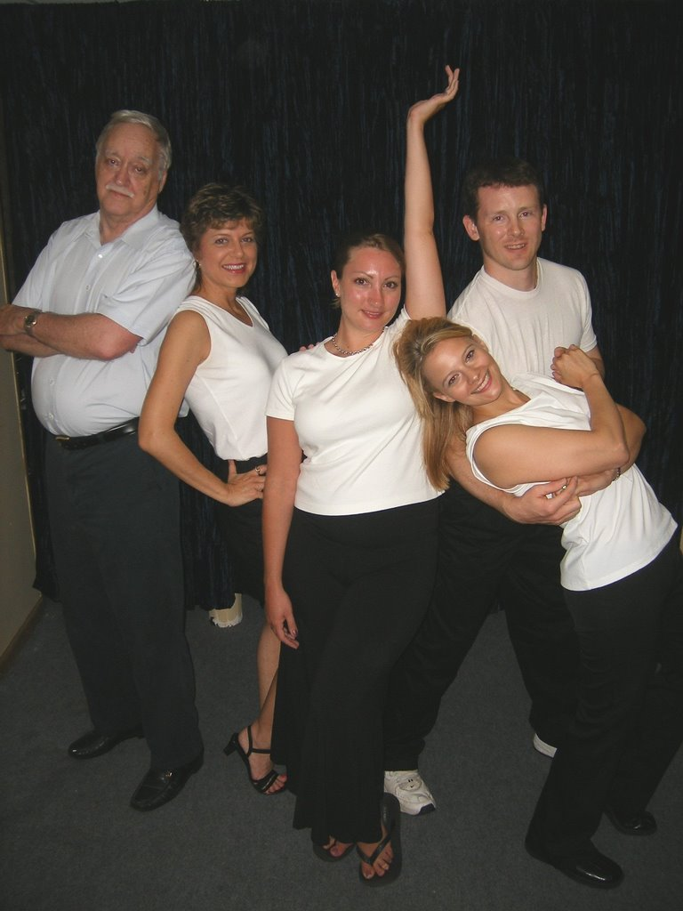

Put On Your Ruby Slippers...
... and follow the yellow brick road to the Wheaton Drama web site to order your tickets now. Apparently, tickets are selling out fast, so act now or you may miss this chance to see Carol polishing the tin man!
Weeeee're off to see the Wizard!
Exciting news, Oz fans! Carol has been cast as part of the ensemble in the Wheaton Drama production of The Wizard of Oz! This is breaking news, so no word yet on what part(s) Carol will be playing in the ensemble. But I…
My Friend Flickr
Hi all! It has been some time since my last post, I know. Movin' Right Along has wrapped, and Carol is looking for her next performance opportunity. In preparation, Carol had some professional photos taken, and is now…

Three to go...
We're half-way through the production run, meaning you only have three more opportunities to catch the show before it disappears forever. I've seen it twice, and as with bowling, the second was even better than the…
1 commentFull House
(No, not the hit [lame] 80s sitcom.) Movin' Right Along opened last night to a packed theater and pouring rain. In this unbiased viewer's opinion, Carol's stage debut was a triumphant success! The show is fast-paced and…

Only three days to Opening Night...

The Birds and the Bees
August 7, 2006 FOR IMMEDIATE RELEASE New West Suburban Theater Company’s First Production Takes You Back to Your Youth The Soapbox Theatre Company’s first production, Movin’ Right Along, opens August 18th. The…
Extra! Extra!
Last week, Carol was back into her "background actor" mode, as she was called up to work as an extra on an independent film called The Strip. The film stars Dave Foley, and has been shooting in the western suburbs. Last…

The Cast
Only 15 days to opening night! Do you have your tickets yet? Here is the cast of Movin' Right Along: L to R: Dennis Stewart, Carol Townsend, Nicole Warren, Julie Bayer, Charlie Rucker Who is that woman on the left?…
Movin' Right Along (update)
Carol's first publicized stage appearance is only a few short weeks away! The SoapBox Theatre web site now lists the showtimes and cast information. Get your tickets today! Performance Dates Friday, August 18 at 8:00pm…